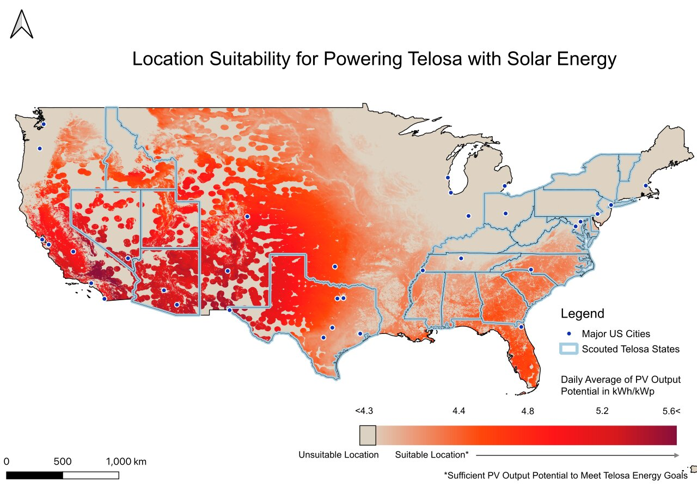
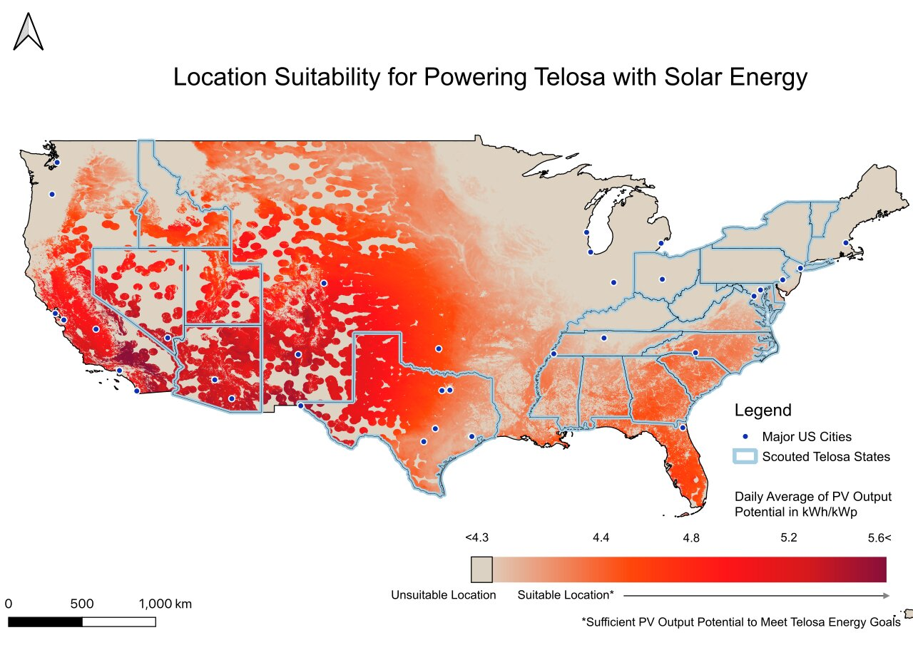
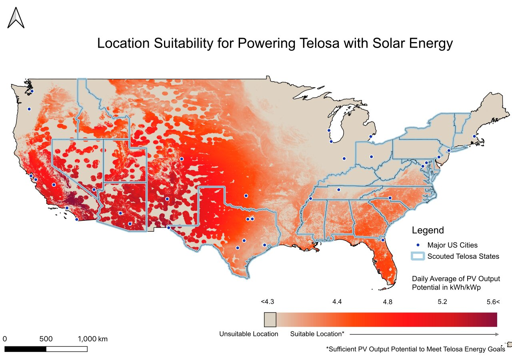

Fourth Cohort Map Gallery¶
These are the visualisations produced by the fourth cohort of the UCL Spatial Energy Analysis module.
,  , , , , , , , , , , , , ,
, , , , , , , , , , , , ,  , , , , , , ,
, , , , , , ,  , , , , ,
, , , , ,  ,
,
These are the visualisations produced by the fourth cohort of the UCL Spatial Energy Analysis module.
, , , , , , , , , , , , , , , , , , , , , , , , , , ,